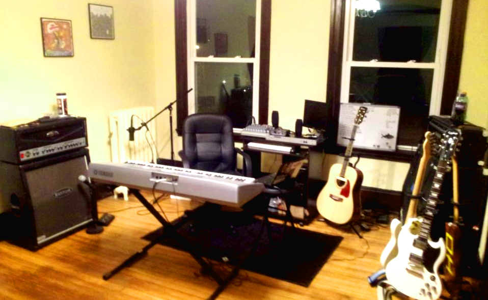

The Studio
As of 3/19/2012

PCI Interface: M-Audio Delta 1010
Mixer: Mackie 1202 VLZ-3
PC: AMD 6 core / 8GB RAM / 1TB SATA
OS: Windows Server 2003 64-bit
Software(DAW): Adobe Audition CS5.5 & Audacity
Speakers: Logitech S220 2.1 Speaker System with Subwoofer Logitech
Headphones: Sennheiser HD201 Lightweight Over-Ear Binaural
Microphones:
- Rode NT5 Instrument Condenser
- Shure SM7B Vocal Dynamic Microphone, Cardioid
- Audio-Technica AT2035 Large Diaphragm Cardioid Condenser
- Shure PG58-QTR Cardioid Dynamic Vocal
Instruments:
- Hohner Marine Band Harmonica, Key of C#
- Ibanez Artwood with LR Baggs M1 pickup
- Epiphone SG (White Ltd Edition Custom)
- Fender Telecaster (Mexico) with Seymour Duncan ST59-1 Little 59 pickup
- Yamaha DGX202 76-Key Portable Keyboard
- Kustom Quad Jr 4x12 Cab
- B-52 LS-100 Amp Head
Misc:
- Seismic Audio - SASTSX-3 (8 Pack) - 3 Foot TS 1/4” Guitar, Instrument, or Patch Cables Black
- Belkin BE112230-08 12-Outlet Home/Office Surge Protector with Telephone and Coaxial
- Musician’s Gear Double Pop Filter 6”